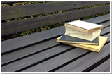

| 零～紫之日記 另一個故事 第四話 |
| ||
|

又……聽見了……一個嘶啞的，恐怖的聲音。 在重複說著一些話，是在說些什麼呢。 簡直像是在唸咒文一樣……這個聲音……不可以聽…… 周圍依稀傳來笑聲。 隨後，頭上遲來的沉重痛楚， 讓我終於理解了狀況。 在眼前模糊的視野裡，出現了灰色的牆壁。 那是教現代國語，同時兼任「文化部」顧問的山本老師，所一向穿著的灰色外套。 手上是闔著的教科書的書背，我就是被這本教科書打在後腦杓了吧。 下次的校內新聞是不是寫個教師體罰的新聞會比較好呢。 「我比較希望妳先寫個關於打瞌睡的學生的新聞再來寫這段。」 思緒被預料到的我，終於完全醒神過來。老師沒有等待我的回答，繼續開始上課。 以節奏聽來舒適的文章作為 BGM，我茫然將視線移向窗外。 雨滴打在窗戶的玻璃上，被雨水扭曲的另外一側，可以看見中庭的鐵線蓮。 從這間位在新校舍的教室，也能看見那個地方。我感覺最近似乎常常一回神就在看著那裡。 心裡祈禱著，那裡最好什麼也沒有…… 『再也無法醒來的咒文』 紫之日記的傳說中，有著這麼一篇故事。 |
||
|
晚上聽見的嘶啞聲音，那是對接近紫之日記者的詛咒。 那從遠方傳來的嘶啞聲音，每晚都會比前一天更接近幾分。 隨著聲音的接近，漸漸可以聽得出那不停重複地，像是咒語般的句子。 但是，沒有任何一個人知道，那些句子的內容。 那是因為一旦知道咒文內容，就會被唸咒語的人捉住。 揮起拿在雙手上的銳針，縫上那個人的雙眼，讓兩隻眼睛再也無法睜開。 讓那個人再也無法醒來，再也無法逃脫日記之中的黑暗。 |
||
|
『「咒文」這個要素和「讓眼睛無法再睜開」這部份，是其他傳說沒有出現過的模式呢。』 依子深感興趣地說著這個依子自己調查得來的故事。 關於紫之日記的故事，大多數都是關於受害者的故事。 都會描述這些受害者如何將下一個受害者捲入，「增殖」出新的受害者。 然而，這個故事裡卻沒有這樣的要素，而且…… 「而且，裡面沒有出現「穿著黑色衣服的女人」，我想，大概她就是發出那個聲音的人吧。」 因為說是「在沉眠之間」讓「眼睛無法再次睜開」，當然也就看不見對方的外表。 『「咒文」「拿在雙手上的銳針」「讓眼睛無法再次睜開」，這些描述都意外的具體耶。』 依子繼續說了下去。 說是在民俗學的書籍和鄉下地方的古老文獻中，偶而會記述些包含殘酷要素的「儀式」。 以刺青的形式將人們的「哀痛」與「罪惡」刻在身上，接受一切的「文身行者」的故事。 接收人們的惡夢，自己陷入永久的沉眠，在沉眠中被送進「那個世界」的，「沉眠巫女」的故事。 以雙胞胎作為供品的「雙子巫女」的故事。 用巫女的血染在繩子上製成注連繩的故事…… 『意外地，這些地方傳承經常會成為都市傳說的根本來源哦。 只是「紫之日記」這個『臉被削去』的下場，我還沒有聽說過……』 依子的語氣簡直就像是在敘述漫畫的結局似的，漫畫和都市傳說有相似之處嗎。 至少，對現在的依子而言，比起來大概就是這種程度吧。至少目前還是…… |
||
|
若是在夜間聽見嘶啞的唸咒聲，千萬不可以去聽。 必須靜靜地屏住氣息，摀住耳朵，不能被發現。 直到，能夠在隔天的早晨醒轉為止。 |
||
| ||
|
- http://www.nintendo.co.jp/3ds/alcj/productionnote/anotherstory.html |

| 上一頁 | － 4 / 6 － | 下一頁 | ||